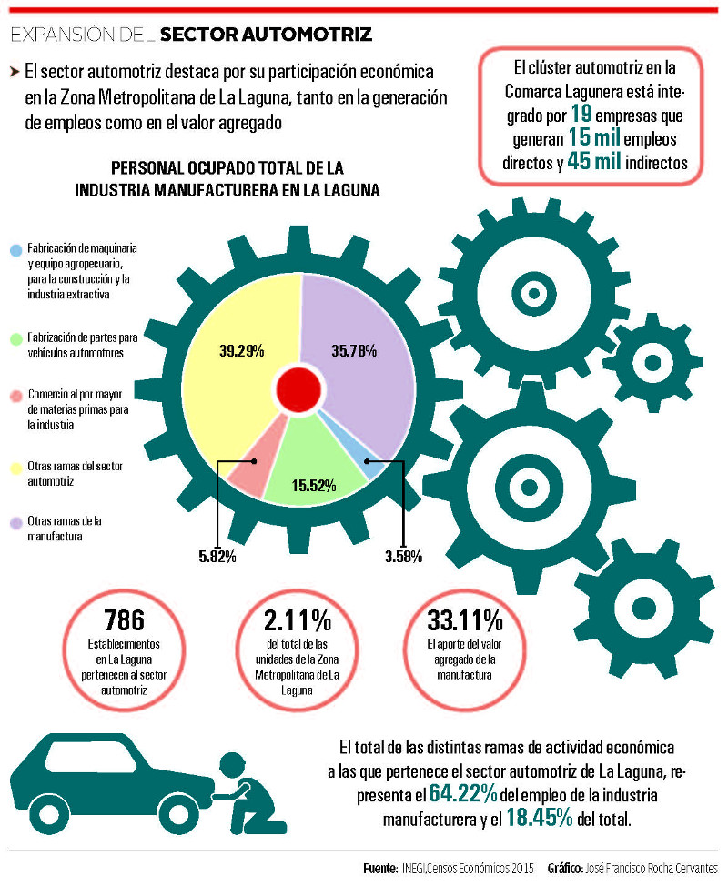

El sector de la industria automotriz en la Comarca Lagunera tiene un fuerte potencial económico y laboral con perspectivas de amplio crecimiento a futuro, debido a su posición geográfica y a otros factores como la saturación del mercado que se está presentando en la región sureste de Coahuila, su capacidad de exportación y su personal capacitado.
Tan sólo en el municipio de Torreón 39,151 personas se emplean en las ramas económicas de este sector. La cifra representa 83.83% del personal ocupado total en la industria manufacturera y 21.08% del personal ocupado total en el municipio.
Asimismo 35.12% del valor agregado generado por la industria manufacturera en el municipio de Torreón, es aportado por las ramas del sector automotriz, lo equivalente a 20.60% del valor agregado total del municipio.
El clúster automotriz en la Comarca Lagunera está integrado por 19 empresas que generan 15 mil empleos directos y 45 mil indirectos, de acuerdo con su presidente José Luis Hotema. La mayoría de estas empresas son Tier 2 (segundo nivel de proveeduría), aunque hay algunas empresas Tier 1, sus expectativas de crecimiento son sobre todo en el segundo nivel.
Sin embargo, el potencial del sector se extiende en toda la Zona Metropolitana de La Laguna (ZML). En Torreón 570 establecimientos económicos se ubican en esta rama, es decir, 31.88% de las unidades económicas de la industria manufacturera o 2.52% del total del municipio.
Asimismo 786 establecimientos en La Laguna pertenecen a las ramas económicas que integran al sector automotriz, la cifra equivale a 2.11% del total de las unidades de la ZML y 25.15% de la industria manufacturera.
Otra manera de conocer el crecimiento del sector, es analizando el subsector de fabricación de equipo de transporte, el cual aporta el 6.47% del personal ocupado total del municipio de Torreón y 25.74% del personal ocupado total de la industria manufacturera. De la ZML participa con el 4.78% del empleo total y 16.63% de la industria manufacturera. A nivel nacional la cifras de participación del subsector son de 3.61% y 15.33%, respectivamente.
Las empresas del clúster automotriz en La Laguna pertenecen también a los subsectores de industrias metálicas básicas, fabricación de productos metálicos y fabricación de maquinaria y equipo. Además, algunas pertenecen al sector de comercio al por mayor y al de servicios, de manera específica a los subsectores de: Comercio al por mayor de materias primas agropecuarias y forestales, para la industria y materiales de desecho; Comercio al por mayor de maquinaria, equipo y mobiliario para actividades agropecuarias, industriales, de servicios y comerciales, y de otra maquinaria y equipo de uso general; así como Servicios de almacenamiento y Servicios de apoyo a los negocios.
Expectativas
En la actualidad el sector automotriz es considerado un sector estratégico a nivel nacional y gracias a las políticas industriales del país, la posibilidad de financiamiento para el clúster automotriz en La Laguna es amplia.
De acuerdo con María de Jesús León Olivares y Ulises Mejía Domínguez, representantes del clúster, las funciones principales del mismo son la competitividad e innovación, así como la generación de riqueza y una necesidad importante es la generación de patentes.
En el país existen once centros de investigación y desarrollo en el sector automotriz, en estados como Aguascalientes, Baja California, Chihuahua, Jalisco, Nuevo León, Puebla, Querétaro, San Luis Potosí y Tlaxcala; y en Coahuila no existe ninguno, por lo tanto de aquí se deriva una gran área de oportunidad.
En las mesas de trabajo para la formación de este clúster, impulsadas por el IMPLAN, se encontró que existe el personal capacitado para el crecimiento del sector y también la capacidad de adaptar los planes de estudio en las carreras profesionales para las necesidades del ramo.
Actualmente la Universidad Autónoma de Coahuila ya cuenta con una carrera orientada a la industria automotriz en Saltillo y existen planes para abrir una extensión en Torreón. No obstante, otras universidades están en disposición de adaptar sus planes de estudio en favor del sector, compartieron los representantes del clúster.
Las expectativas de crecimiento del clúster, se orientan principalmente al desarrollo de capital humano, a la innovación, al desarrollo de proveeduría y a obtener fuentes de financiamiento. Todo esto en el marco de un fuerte empuje del sector a nivel nacional e internacional.
Este año se considera que el monto de las divisas por parte de la industria automotriz ha alcanzado los 50 mil millones de dólares, superando a los ingresos por petróleo, turismo y remesas, informó Ulises Mejía, secretario del clúster.
Otras ventajas competitivas, es que según datos de INEGI las remuneraciones promedio del sector automotriz son 2.3 veces mayores a las del resto de la industria. Además México ocupa el cuarto lugar en el mundo en exportación de vehículos automotrices.
Según la Asociación Mexicana de la Industria Automotriz se estima que para 2020 se exportarán 4 millones de vehículos, lo cual representará un problema grande de logística, desarrollo de capital e infraestructura, indicó el secretario del clúster en La Laguna.

Participación económica
- 786 establecimientos en La Laguna pertenecen a las ramas económicas que integran al sector automotriz.
- La cifra equivale a 2.11% del total de las unidades de la ZML y 25.15% de la industria manufacturera.
- El sector aporta el 33.11% del valor agregado de la manufactura y *18.85% del valor agregado total de la ZML.**
- El total de las distintas ramas de actividad económica a las que pertenecen al sector automotriz de La Laguna, representan el 64.22% del empleo de la industria manufacturera y el 18.45 del total.
Fuente: INEGI. Censos Económicos 2014
| Personal ocupado total de la industria manufacturera en La Laguna | Personal Ocupado |
|---|---|
| Fabricación de maquinaria y equipo agropecuario, para la construcción y para la industria extractiva | 3.58% |
| Fabricación de partes para vehículos automotores | 15.52% |
| Comercio al por mayor de materias primas para la industria | 5.82% |
| Otras ramas del sector automotriz | 39.29% |
| Otras ramas de la manufactura | 35.78% |